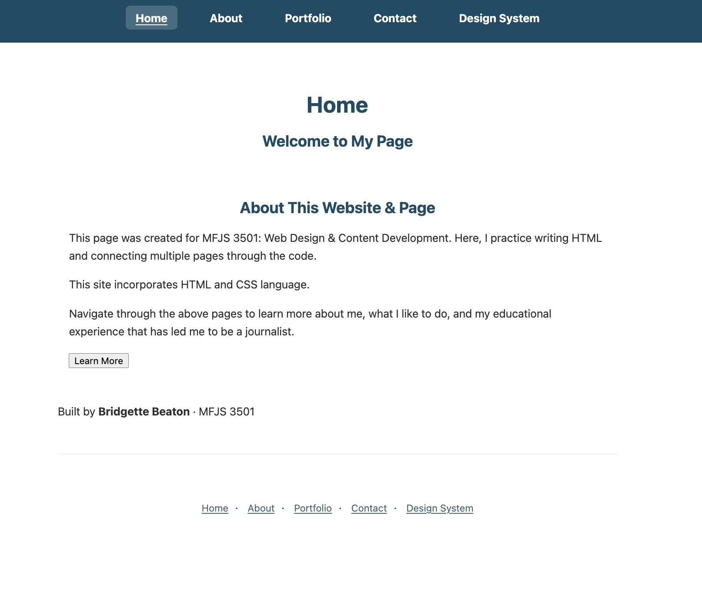
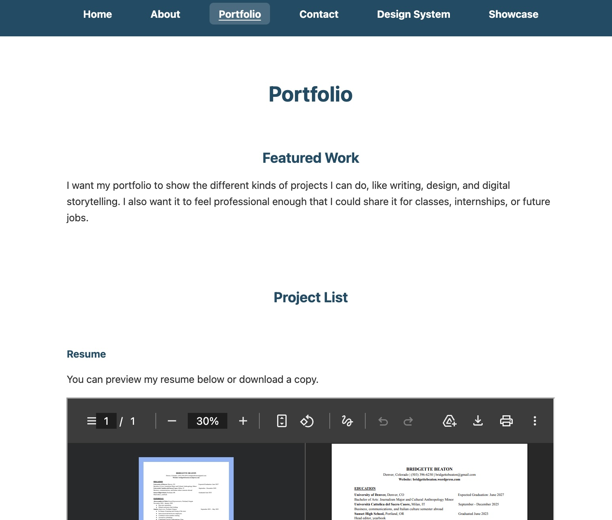
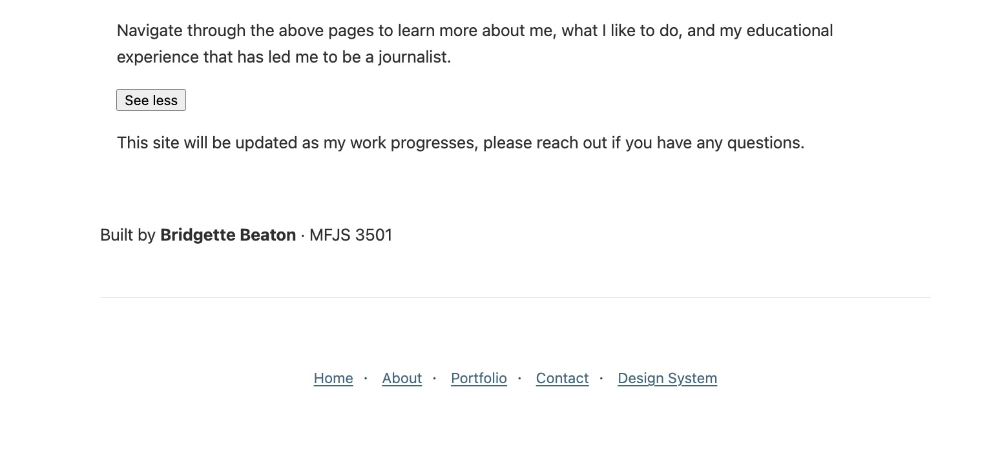

Web Design Portfolio
A responsive portfolio website designed to present my work, design style, and technical skills in a clear and professional way.
What did I build?
I built a portfolio-style website that introduces who I am, highlights my projects, and gives visitors an easy way to learn more about my work. The site includes multiple pages, responsive layouts, and interactive elements that make the experience feel polished and easy to navigate.
Why did I build it?
I created this project to build a professional online presence for outside viewers such as recruiters, clients, and collaborators. The concept was to design a portfolio that feels simple, organized, and visually consistent so people can quickly understand my work and skills. The site is meant for an audience that values both creativity and clarity, so I focused on strong hierarchy, clean spacing, and an easy user experience.
How did I build it?
I designed and developed the site using front-end web design tools and workflows. I used HTML to structure content, CSS to create the visual system and responsive layout, and JavaScript for interactivity. I also used Figma to plan layouts and GitHub Pages to publish the live site. Building this project strengthened my skills in coding, responsive design, accessibility, visual consistency, and debugging.
Project Screenshots

Main landing page introducing the site and visual style.

Example of a content page showing layout and organization.

Example of navigation, hover effect, or JavaScript interaction.
Tools Used
- HTML
- CSS
- JavaScript
- Figma
- GitHub
- GitHub Pages
What I Learned
This project helped me better understand how to turn a design idea into a working website. I learned how to create a more consistent design system, improve responsive behavior across screen sizes, and test my site for accessibility and usability. I also became more confident using GitHub, organizing multi-page site structures, and refining details such as spacing, hierarchy, and interactive features.